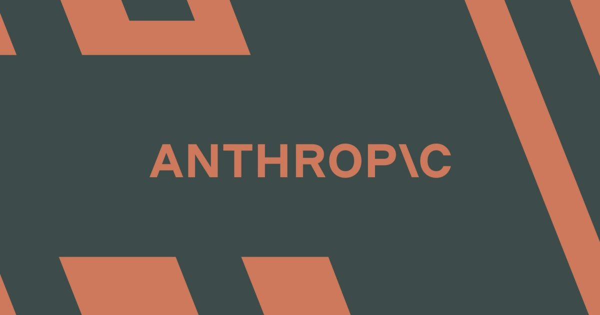

Искусственный интеллект Anthropic дал полиции Филадельфии поддельный совет о нераскрытом убийстве
Согласно отчету 6abc, модель антропного ИИ предоставила ложную информацию о нераскрытом убийстве в отдел полиции Филадельфии (PPD).
В заявлении, опубликованном в пятницу, PPD заявила, что модель ИИ отправила подсказку через PhillyUnsolvedMurders.com 18 июля, но следователи никогда не рассматривали ее, потому что она была помечена как ...